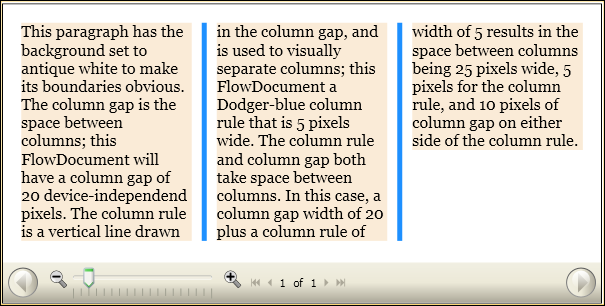

Практическое руководство. Использование атрибутов разделения столбцов FlowDocument
В этом примере показано, как использовать функции разделения столбцов FlowDocument.
Пример
В следующем примере определяется FlowDocumentи задает ColumnGap, ColumnRuleBrush, и ColumnRuleWidth атрибуты. FlowDocument Содержит один абзац содержимого образца.
<FlowDocumentReader>
<FlowDocument
ColumnGap="20.0"
ColumnRuleBrush="DodgerBlue"
ColumnRuleWidth="5.0"
ColumnWidth="140.0"
>
<Paragraph Background="AntiqueWhite" TextAlignment="Left">
This paragraph has the background set to antique white to make its
boundaries obvious.
The column gap is the space between columns; this FlowDocument will
have a column gap of 20 device-independend pixels. The column rule
is a vertical line drawn in the column gap, and is used to visually
separate columns; this FlowDocument a Dodger-blue column rule that
is 5 pixels wide.
The column rule and column gap both take space between columns. In
this case, a column gap width of 20 plus a column rule of width of 5
results in the space between columns being 25 pixels wide, 5 pixels
for the column rule, and 10 pixels of column gap on either side of the column rule.
</Paragraph>
</FlowDocument>
</FlowDocumentReader>
На следующем рисунке показаны последствия ColumnGap, ColumnRuleBrush, и ColumnRuleWidth атрибуты на отображаемый FlowDocument.
